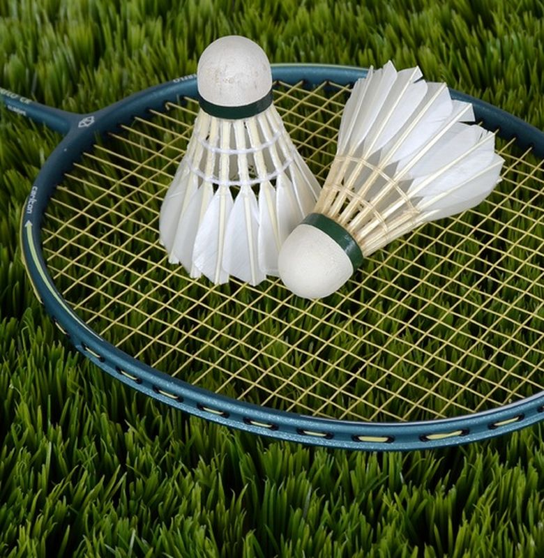

Permainan Bulu Tangkis
Istilah Umum Permainan Bulu Tangkis
Bulu tangkis adalah olahraga raket yang dimainkan oleh dua orang (untuk tunggal) atau dua pasangan (untuk ganda) di lapangan yang dibagi oleh jaring. Tujuan utama dalam permainan bulu tangkis adalah untuk mencetak poin dengan cara mengirim shuttlecock (bulu tangkis) ke sisi lawan lapangan, melewati jaring, dan jatuh di lapangan lawan.
Bulu tangkis adalah olahraga yang cepat dan menuntut kelincahan, ketepatan, kecepatan, dan ketahanan fisik. Ini adalah salah satu olahraga yang populer dan kompetitif di seluruh dunia, dan banyak negara memiliki pemain-pemain yang hebat dalam olahraga ini.